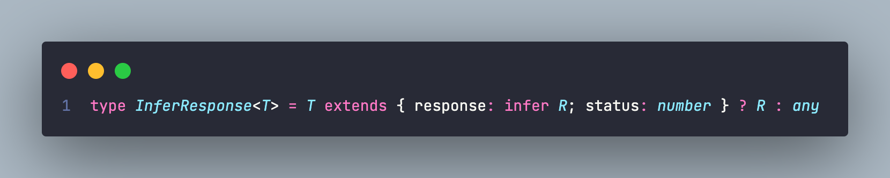
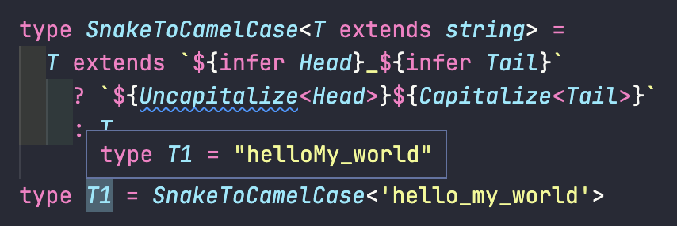
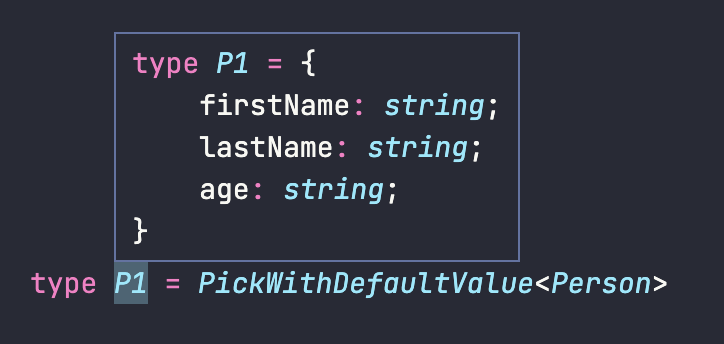

沒有 TypeScript 做不到的，只有你想不到的。
泛型搭配 extends
範例一
1 | function getFirstElement<T extends number>(arr: T[]): T { |
extends 在這邊的意思是指「T 至少要滿足 number 這個 type」，而 arr 的 type 是 T[]，把兩個組合起來的意思就是：
傳入的值必須是「陣列」，且陣列中的元素必須為「number」。
所以用起來會是這樣：
1 | getFirstElement([1, 2, 3, 4]) |
如果傳入不是 number 的 type 時就會編譯錯誤：
如果想要讓 T 也支援 string 的話可以改成這樣子：
1 | function getFirstElement<T extends number | string>(arr: T[]): T { |
這樣的意思就會變成：
傳入的值必須是「陣列」，且陣列中的元素必須為「number」或「string」。
所以現在傳入 string 陣列的話就不會出錯了：
1 | getFirstElement([1, 2, 3, 4]) // correct ✅ |
範例二
假設現在有一個印出名字的 function，長這樣：
1 | function logPersonName(person) { |
然而當我們對這個 function 定義 type 時會碰到一個問題，因為通常 person 可能會有各式各樣的屬性，像這樣：
1 | type Person1 = { |
所以如果要針對不同的 person 去定義 type 時，就得各別寫一個 function 來處理：
1 | // 給 Person1 用的 function |
看到這邊應該會覺得這是很麻煩的做法吧？所以這時候聰明的你就會想說「阿，我可以用泛型來處理吧！」，接著寫出這樣的東西：
1 | function logPersonName<T>(person: T): void { |
然後就會看到這段錯誤訊息：
這裡有特別把 any 給框起來，是因為這就是主要原因。TS 的意思是說：
我知道你給了一個泛型，但是這個泛型的範圍實在是太「廣『泛』了」，因此我無法保證
firstName和lastName會出現在 person 中。
為了讓 TS 確保 person 至少會有 firstName 和 lastName 這兩個屬性，我們可以用 extends 改寫成這樣子：
1 | type Person = { |
這樣子就可以確保 firstName 和 lastName 存在，但又不會僅限於特定幾個 person 才能使用這個 function 了：
1 | // correct ✅ |
範例三
如果要對 Type Alias 本身來限制泛型的話，可以這樣做：
1 | // 至少要出現的屬性 |
現在這個 GenericPerson 的用途就是：
給我一個 type(T)，我會回傳你一個新的 type。傳進來的 type 可以包含任何屬性，但前提是至少要有
firstName和lastName屬性，否則不給過。
實際用起來會像這樣：
1 | type MyPerson = { |
如果現在把其中一個屬性拿掉的話，就會看到錯誤訊息：
這邊會看到兩個錯誤。
第一個是 person.lastName，這是因為 MyPerson 中並沒有 lastName，所以自然不該去存取這個屬性。
第二個是 GenericPerson<MyPerson>，因為 GenericPerson 中的 T 有用 extends 來限制傳入的 T 至少要有 firstName 和 lastName 兩個屬性，而 MyPerson 中沒有 lastName，所以就會出錯。
keyof 的使用
如果你有一個 type 長這樣：
1 | type Person = { |
這時候你只想要 Person 中的 key 的話可以用 keyof 來萃取：
1 | type Person = { |
這邊你可能會有一個疑惑是為什麼不會顯示 'firstName' | 'lastName' 而是 keyof Person？這是因為在定義一個物件的 type 時它的 key 有可能會是 string、number 或 symbol 這三種類別：
這樣子 TS 就無法確保型別是什麼，所以才無法直接顯示 'firstName' | 'lastName'。
要解決這個問題的話可以搭配 & string 來讓 TS 知道這邊的 key 是只會是 string 就行了：
Indexd accessing
如果你有一個 type 長這樣：
1 | type Person = { |
這時候你想把 firsName 的 type（string） 取出來的話，可以這樣做：
透過這種方式產生的 type 就稱為「Indexd accessing」。
如果想要取出「多個值」的話可以這樣寫：
接下來你要問說「如果我想要所有的值呢」，對嗎？在講解答前可以先想想看剛剛的邏輯，當我們想要取出 firstName 的 type 時會寫 Person['firstName']，想要 firstName 和 age 時會寫 Person['firstName' | 'age']，…以此類推。
也就是說，只要把所有 Person 的 key 都放到 [] 裡面的話就可以拿到所有屬性的 type。
有察覺到在暗示什麼嗎？其實就是前面的 keyof，只要寫成這樣就可以取出所有屬性的 type 了：

generic & keyof & indexed access 綜合練習
這邊是測試你對前面的東西有沒有熟悉，只要懂這三樣東西後就能做出蠻方便的東西。
這裡要實作的是一個用來取出物件屬性值的 function，用起來會像這樣：
1 | const person = { |
但我希望除了基本的功能以外，它還要有底下的功能：
1. 避免傳入不正確的 key：
2. 可以自動顯示能傳入哪些值：
這功能其實還蠻方便的吧？來看看這是怎麼做出來的。
首先這個 function 原本應該是長這樣子：
1 | function getObjectValue(obj: any, key: any) { |
一開始可以先不用考慮泛型的部分，我們先做簡單一點的版本就好。
如果只是單純想把 obj 跟 key 限制在一定某個範圍的話，我們只要建立一個實際的 type 來限制即可，像這樣：
1 | // 建立一個 Person type |
這樣子其實就能實現上面的兩種功能了，現在第二個參數只能傳入 firstName、lastName、age ，並且有自動提示的功能。
問題在於今天如果想傳入的 obj 不是 Person 這個 type 的話就沒辦法用了：
（改傳入另一個叫做 car 的物件）
雖然可以幫每一個物件建立一個不同的 function 來處理，但那樣子有點不切實際，畢竟邏輯明明都一樣。
這時候泛型就很好用了，既然 obj 會隨著傳入的值而改變，我們就把會「改變」的地方變成泛型就好了：
1 | type Person = { |
這樣就不會出現錯誤訊息了：
做到這邊其實就完成一開始想要的功能了，我們可以傳入任何物件，並且只能傳入對應的 key，也能有提示的功能。
幫 key 加上限制
如果現在想要把可以傳入的 key 加上限制，像這樣子：
1 | // 只能傳入 'age' 這個 key |
這邊給幾個提示，可以先自己思考看看後再往下看解答：
- 需要第二個泛型，用來當作 key 的 type
- 第二個泛型必須要有一定的限制，否則會因為太廣泛而出問題
1 | // 加入第二個泛型 U，並且限制 U 只能傳入 T 的 key |
稍微解釋一下這邊的流程：
- 先把 key 的 type 變成 U，讓 key 變成是可以自訂的 type
- 利用 extends 把 U 的範圍限制在 T 的 key，以免傳入不存在 T 身上的 key
最後可以注意到回傳值的部分：T[U]。
因為我們最後會回傳的是「T 這個物件的 value」，而如果要表示這個 value 的 type 的話會用 T[...] 來表示，例如 T['firstName'] 會是 string，T['age'] 會是 number。只是現在我們把 [...] 的部分也變成是泛型了，所以就會變成 T[U]。
這一段可能有點抽象，建議可以回憶一下之前的範例並練習看看會比較好理解一點。
Utility Type
在寫專案的時候我們通常會有一種 function 是「把某個值丟進去，再輸出成想要的結果」，這種東西就稱為「Utility」。而這種觀念也可以套用到 TS 上，只是會變成「把某個 type 丟進去，再輸出成另外一個 type」。
底下附上幾個簡單的範例，只要前面的觀念有弄懂應該就不會覺得複雜：
1 | // sample |
每個 utility 會輸出的結果：
OrNull某個 type 或是 nullOneOrMany單一或陣列形式的 typeOneOrManyNull單一或陣列形式或 null 的 typeKeys只取出 key 的 typeValues只取出屬性值的 typePickObj取出指定屬性值的 type
Conditional Types
在 TS 中可以像 JS 一樣用三元運算子來計算出最後的值，只是一個是回傳「值」，一個是回傳「型別（type）」。
來看個簡單的範例：
1 | // SomeType1 的型別是 'PeaNu' 這個字串 |
出來的結果會是這樣：
這段如果還記得 extends 的用途應該就不難理解，意思是「如果 SomeType1 的型別有出現在 string 的子集合裡，就回傳 true 來當作新的型別，反之則回傳 false。
而 PeaNu 雖然是一個固定的字串值，但它當然符合 string 這個條件，所以最後的型別就會是 true。
Flatten
接著是 TS 官方提供的一個範例：
跟剛剛的範例差不多，但可能會有疑惑的地方是 T[number]，這個先不用的心，後面會再回來解釋。
把這段型別翻成白話的意思是「如果傳進來的 T 是陣列型別，就回傳 T[number]，否則直接回傳原本的 T。
所以我們可以來做個測試：
1 | type Flatten<T> = T extends any[] ? T[number] : T |
結果就會跟剛剛預期的一樣，會是 T 原本的型別：
那如果現在改傳入陣列型別呢？
1 | type Flatten<T> = T extends any[] ? T[number] : T |
會發現陣列被「拿掉了」：
這個其實就是 Flatten 的真正的用途：「把陣列中的元素型別抽出來」。
不太懂的話可以再來看個例子：
1 | type Flatten<T> = T extends any[] ? T[number] : T |
輸出結果：
關於 T[number]
搞懂了上面的 Conditional Type 後，現在回來談一下 T[number] 的部分。剛剛你可能會有疑惑的地方是「為什麼用了 T[number] 就可以把陣列元素的型別拿出來？」
這是因為當一個型別是陣列時，他的 index 值一定會是「數字」，所以我們可以透過這些數字來取出對應的元素：
1 | type Manufacture = ['a', false, null] |
但當我們想要指向陣列中的所有元素時不會是一個特定的數字，所以這時候只要把 index 指定為 number 即可：
1 | type ManufactureAll = Manufacture[number] // false | "a" | null |
分配律的概念
我們先來看一個官方提供的 utility：Extract，它的原始碼如下：
意思是說「當 T 為 U 的子集合時，回傳 T 的型別，反之回傳 never」。
實際使用起來會像這樣子：
1 | type Collection = 'a' | 'b' |
先來看 T1，能看到 a 和 b 因為有出現在 Collection 的集合中，所以會被留下，而 c 因為不屬於 Collection 的集合所以不會被留下。如果這段有理解的話應該就能看懂 T2 和 T3，因為都是相同的概念。
可是你仔細想想後會發現一道瑕疵，「為什麼前面明明說符合條件時就回傳 T 的型別（a | b | c），但最後回傳的卻只有 a | b？說好的 c 呢？」
這是因為當泛型傳入的型別為 union type 時，會出現類似分配律的行為。如果忘記什麼是分配律的話，這裡幫你複習一下：
1 | a * (b + c) = (a * b) + (a * c) |
所以拿 T1 的例子來示範的話，其實可以拆成這樣子：
1 | // 'a' | 'b' |
T2 的話則是：
1 | // | 'a' | 'b' | never | never |
註：任何跟 never 交集的結果都還是它自己
所以這就是為什麼可以只回傳部分的 T，因為有分配律的概念在後面。
不想要分配律的行為
如果不想要 TS 使用分配律的行為來進行判斷的話，可以加上 [] 來改寫：
1 | type ExtractNoDistribute<T, U> = [T] extends [U] ? T : never |
現在只有當 T 全部都符合條件時才會回傳整個 T，否則一率回傳 never。
Infer
Infer 是一個讓 TS 自動推導型別的關鍵字。這邊會拿前面介紹過的 Flatten 來示範如何使用：
原本在 Flatten 對 T 的限制是「符合任何型別的陣列」，但現在可以利用 infer 來自動推導出該陣列的型別為何：
如果你對於這邊的 (infer R)[] 有點疑惑的話，可以回憶一下你在幫陣列定義 type 的時候都是怎麼寫的，通常會是這樣子：
1 | string[] |
而現在我們希望把 [] 前面的 string、number 交給 TS 去自動判斷，所以才會用 (infer R) 的方式來告訴 TS：「我要你幫我自動推導出 R 的型別」。
接著我們在用的時後就會是這樣：
1 | // 此時的 R 等於 'PeaNu' | 'PPB' | 'Andy' |
以這個例子來說傳入的型別都有符合「陣列子集合」的條件，所以最回傳的就會是 R 的型別。
1 | type Persons = ['PeaNu', 'PPB', 'Andy'] |
另一個範例
剛剛的範例可能看不太出來 infer 的用途，所以這邊再舉一個例子：

關於這個內容我會這樣子來解釋：「T 必須是 {response: ..., status: number} 的子集合，若符合的話就回傳 ...，反之則回傳 any」。
而 ... 的部分我們用了 infer R，也就是請 TS 自動推導出 R 的型別，例如說：
1 | type RespType1 = InferResponse<{ response: { data: 'PeaNu' }; status: 200 }> // { data: 'PeaNu' } |
RespType1 的內容因為有符合 extends 的條件，所以會回傳 R 的型別。而 R 的型別會依據 response 中的內容來判斷，應該能看出是 { data: 'PeaNu' }，所以這就會變成最後的結果。
RespType2 的內容因為沒有符合 extends 的條件，所以會直接回傳 any 型別。
使用 infer 的時機與注意事項
看了前面兩個範例以後應該能察覺 infer 通常使用在需要條件判斷，但又不確定型別時使用。
此外，還有幾個必須要遵循的條件：
infer只能用在 condition type 中的extends和?前的位置使用，不可以在一般的 genericextends中使用。infer R的這個 R 若要當成回傳值時只能在true的情況（即?後面），不能在false的情況（即:後面）下使用。
試著理解 ReturnType 和 Parameters
如果前面都有理解的話，這兩個 type 應該就不難理解。
先來看 ReturnType 的原始碼：

因為比較複雜，所以這邊可以拆成兩個部分來看：
1 | <T extends (...args: any) => any> |
首先傳入的 T 必須符合「function 的子集合，且該 function 可以接收任何參數、任何回傳值」。
1 | T extends (...args: any) => infer R ? R : any |
接著是條件判斷。若傳入的 T 符合條件（剛剛上面提的），那就把該 function 的回傳值用infer 推導出來後回傳（即 R），反之則回傳 any。
實際使用起來會是這樣：
1 | type FuncReturnType1 = ReturnType<(a: number, b: string) => number> // number |
接著來看 Parameters 的原始碼：
其實跟剛剛很類似，不過我們一樣拆成兩部分來看：
1 | T extends (...args: any) => any |
首先傳入的 T 必須符合「function 的子集合，且該 function 可以接收任何參數、任何回傳值」，到目前為止都跟剛剛一樣。
1 | T extends (...args: infer P) => any ? P : never |
接著就有點不同了。若傳入的 T 符合條件（剛剛上面提的），那就把該 function 的「參數值」用infer 推導出來後回傳（即 P），反之則回傳 never。
所以跟剛剛的差別只在於 infer 的對象不同，一個 infer 參數，一個 infer 回傳值；以及當條件不符合時回傳 never。
實際使用起來會是這樣：
1 | type FunctionParamsType1 = Parameters<(a: number, b: string) => number> // [a: number, b: string] |
Template Literal Types
好像沒有什麼是 TS 做不到的，就連 JS 的「Template Literal」也是。直接來看範例：
就真的跟你在寫 JS 的用法幾乎一樣，不要懷疑。不過除了用來定義型別以外，在 TS 中它還有一些蠻方便的用途，下面來介紹一下。
當 Template Literal Types 碰到 Union 時
當我們在 ${} 中放入的型別是一個 union 時，它會再產生另外一組新的 union，來看範例：
所以來考考你，底下的範例會輸出什麼：
1 | type X = 'left' | 'right' |
答案：
1 | ;'left-top' | 'left-bottom' | 'right-top' | 'right-bottom' |
把 Enum 的 values 變成 Union Type
如果你有一個 Enum 長這樣：
當你想把這些「值」變成一個 type 時，你可能會額外寫一個 Type Alias 來處理：
1 | type ManufactureValues = 'apple' | 'samsung' | 'google' | 'sony' |
這樣子的缺點是如果未來要新增 MANUFACTURE 的內容時，就得同步更新 ManufactureValues 的內容，其實還蠻麻煩的。
因此可以利用 Template Literal Types 來改寫成這樣：
1 | type ManufactureValues = `${MANUFACTURE}` // "apple" | "samsung" | "google" | "sony" |
只要把 MANUFACTURE 放入 ${} 以後就會自動產生對應的 union 出來，非常非常好用！
Recursive type
建立 Type Alias 的方式有很多種，但沒想到連「遞迴」也是有可能的！？讓我們來看個範例：
1 | type ValueOrArray<T> = T | T[] |
這裡先建立了一個 ValueOrArray，用途是讓我們可以建立一個「純值」或「陣列值」的變數，所以 something 可以是 number 或 number[]。
可是當出現巢狀陣列時會有問題：
其實也沒什麼奇怪的，因為我們只有說型別是 number[] 或 number，並沒有定義 number[][]。
所以這裡可以用遞迴的方式來處理：
1 | type ValueOrNestedArray<T> = T | ValueOrNestedArray<T>[] |
這邊的 ValueOrNestedArray 的值是 T | ValueOrNestedArray<T>[]。要注意的地方是它在裡面又呼叫了自己，所以就會有點類似這樣的感覺：
1 | T | T[] | T[][] | T[][][] | ... |
所以用這種方式改寫後就能處理巢狀陣列的問題。
範例－SnakeToCamelCase
這是另一個遞迴的應用範例，原始碼如下：
雖然剛開始看我也覺得有點複雜，不過拆成一塊一塊來解讀就會比較好理解了。我們先來看第一個部分：
1 | type SnakeToCamelCase<T extends string> |
這段的意思是「傳入的 T 必須是 string 的子集合」。
1 | T extends `${infer Head}_${infer Tail}` ? ... : T |
這邊是一個條件判斷，「當 T 屬於 xxx_ooo 字串的子集合」時符合條件，不符合的話就回傳 T。
此外，這邊還搭配了 infer 來推導出字串的 literal string type。舉例來說，如果傳入的 T 為 hello_my_world，那 infer 出來的結果就會是 hello 與 my_world（前者為 Head，後者為 Tail）。
1 | ;`${Uncapitalize<Head>}${Capitalize<SnakeToCamelCase<Tail>>}` |
這邊使用了兩個內建的 Utility Types：
Uncapitalize顧名思義，把第一個字轉成小寫。Capitalize顧名思義，把第一個字轉成大寫。
舉個範例：
1 | type CapitalizeWord1 = Uncapitalize<'Hello'> // 'hello' |
理解後讓我們繼續回到剛剛的段落，現在假設 <Head> 與 <Tail> 的值為 hello 與 my_world 的話，出來的結果會是這樣：
1 | ${'hello'}${Capitalize<SnakeToCamelCase<'My_world'>>} |
這邊如果跟我一樣對遞迴苦手的話，可以先拿掉 SnakeToCamelCase 這一段：
1 | ${'hello'}${Capitalize<'My_world'>} |
這樣子最後的結果就會是 helloMy_world，應該不難理解：

可以看到如果沒有遞迴的話，就只會對第一段的 xxx_ooo 做轉換，後面的部分沒有處理完全。所以這個時候我們要做的事情很簡單，就是把剛剛的事情再做一次，反覆的重複這段動作，直到不會再出現 xxx_ooo 的格式為止，這個就是遞迴的用意。
這邊附上遞迴中的每個步驟的流程，希望有助於理解：
1 | 1. hello_my_world // 第一次執行 SnakeToCamelCase<'hello_my_world'> |
我覺得遞迴之所以難懂，是在於它的執行順序跟你想的不太一樣。以上面的例子來說，雖然 SnakeToCamelCase<'hello_my_world'> 是第一個被執行的，但他實際跑完的時間點卻要等到後面的 SnakeToCamelCase<'my_world'>、 SnakeToCamelCase<'world'> 跑完並把值回傳以後，才會執行回過頭來下一行的 ${'hello'}${Capitalize( 'myWorld' )}。
所以碰到遞迴的時候要常常用反向的方式去思考，要用「排在後面那個 function 的回傳值應該是什麼？」下去思考，我覺得這樣就會好理解一點了。
typeof
如果你寫 TS 已經有一段時間了，應該會知道 TS 有一個自動推導的功能，就是即便我們沒有幫變數指定型別，它也能自動推導出來：
這樣的好處是什麼？好處是只要用 TS 中的 typeof（不是 JS 的那個）就能產生出新一個型別，像這樣：
注意這裡是直接檢查一個變數的型別（bio），再把這個型別賦給 BioType，跟以往的做法不太一樣。
既然可以用 typeof 來取出型別，那這樣子玩也是 ok 的：
1 | const bio = { |
利用 typeof 取出 Enum 的 Key
上次有介紹過如何用 Template Literal Types 來取出 Enum 的值：
1 | type ManufactureValues = `${MANUFACTURE}` // "APPLE" | "SAMSUNG" | "GOOGLE" | "SONY" |
這次來介紹如何用 typeof 來取出 Enum 的 keys：
1 | type ManufactureKeys = keyof typeof MANUFACTURE // "APPLE" | "SAMSUNG" | "GOOGLE" | "SONY" |
這兩招學起來後對 Enum 會非常有幫助！
Index Signatures & Mapped Type
一般在幫物件建立型別時會這樣子做：
1 | type Person = { |
但如果哪天你碰到「有太多屬性」的問題時，你可能不會想像上面這樣子把每一個屬性都列出來，這時候就可以改寫成這樣：
1 | type Person = { |
這種寫法叫做「Index Signatures」。我們沒有直接指定屬性名稱，而是用一個 key 來當作變數，並把這個 key 的型別設為 string。
key 只是一個變數，你想取什麼名字都 ok。而型別的部分可以指定的值有 string | number | symbol。當然，這邊 Person 的屬性很顯然是一個字串，所以 string 自然是最符合的型別。
在理解完 Index Signatures 以後，接著就可以來介紹「Mapped Type」。
Mapped Type 的用法跟前面很類似，只差在它會多用到一個 in 關鍵字，來看一個範例：
1 | type Person = { |
註：這裡的 key 一樣只是個變數，想取啥就取啥。
如果你熟 ES6 的話應該會覺得這跟 for...in 和 for...of 的寫法很類似。確實，這兩者背後的共通點就是「iterable」的概念。
以上面的例子來說，其實只是去迭代 firstName 和 lastName 這兩個值，並產生出像這樣的東西：
1 | type Person = { |
這個例子看起來有點脫褲子放屁的感覺，不過如果用對地方的話會發現這是一個很厲害的功能，讓我們再看一個例子。
假設目前有個 type 長這樣：
1 | type Events = { |
如果我想要再多一個一樣的型別，只是 string 的部分改成 function，像這樣：
1 | type EventHandlers = { |
你可以想想看怎麼利用 Mapped Type 來改寫嗎？不然這樣子寫會有一個問題，就是當 A 改變時也得一併修改 B，才能確保兩邊的內容是一致的。
答案是：
1 | type HandleEvents = { |
產出的內容：
很神奇吧！但其實只是利用前面提過的概念而已，先用 keyof 把 Events 的屬性取出來，再利用 Mapped Type 來迭代出新的型別。
搭配 Template Literal 修改 key 的值
剛剛已經介紹過怎麼利用 Mapped Type 來修改物件型別的值的 type，這邊再教你一招新的：「如何修改 key 的值」。
這邊會拿剛剛的範例來用：
1 | type HandleEvents = { |
這邊想做的事情是，把 key 的部分改成：
1 | type EventHandlers = { |
如果要達成這樣的效果，可以建立一個 utility type 來達成：
首先來看 K in key of T & string 這一段。因為我們要對傳入的型別（即 T）的 key 做修改，所以必須先把原本的 key 透過 keyof 取出。
另外 T & string 後面 & string 的用途在前面有提過，一個 key 的型別可以是 string | number | symbol，所以要用 & string 來讓 TS 知道這邊的 key 是 string，否則後面在使用時會有一些衝突。
順利取出 key 以後就可以搭配 in 來迭代每一個 key。
接著看到 as ... 的部分。as 的作用是「斷言」，例如說：
1 | const something = '123' as number |
這裡的 '123' 照理說會是 string，但是當我們在後面加上 as number 以後，something 就會被強制變成 number 的型別：
我知道這個例子看起來有點詭異，但重點是要強調 as 可以把原本的型別修改成另一個型別。
所以 K in key of T & string 後面的 as 就是在「把前面的 K 修改成 ??? 型別」。這裡想做的修改是把原本的 K 加上前綴字 handler，所以搭配了 Template Literal 來做處理（即 handler${Capitalize<K>}），透過這種方式產出的型別就會是 handler(xxx)（xxx 就是 K 原本的字串內容）。
除了加上 handler 前綴以外，這邊還用了 Capitalize 把 K 的字首變成大寫，藉此讓產出的文字符合 JS 的命名慣例（駝峰式）。
理解完每一步的邏輯後，現在可以利用它來達到我們想要的結果了：
1 | type ToEventHandler<T> = { |
Property modifiers
雖然你可能不知道什麼是「Property modifiers」，但你其實早就在用它了：
1 | type Person = { |
? 跟 readonly 這兩個符號都是 Property modifiers。如其名，就是 property 的修飾符號。以這個例子來說的話：
age屬性是 optional 的，沒有也沒關係lastName的屬性值只能讀，不可以改寫它的值
搭配 Mapped Type 來使用
如果現在我們有兩個 Type 是：
1 | type OptionalPerson = { |
現在如果要讓 OptionalPerson 的所有屬性變成 Optional，可以這樣寫：
1 | type ToOptional<T> = { |
或者是把 NonOptionalPerson 的所有屬性變成 Required 的話：
1 | type ToRequired<T> = { |
又或者是設為 readonly 或 non-readonly 的話也可以這樣做：
1 | type ToNonReadOnly<T> = { |
最後來做個測試。
如果現在把 OptionalPerson 丟給 ToRequired，所有屬性就會變成 Required：
Partial、Required 和 Readonly
剛剛利用 property modifier 建立的三種 Type，其實就是 TS 內建提供的 Partial、Required 和 Readonly。這邊分別來看一下它們原始碼：
1 | type Partial<T> = { |
1 | type Required<T> = { |
1 | type Readonly<T> = { |
泛型參數預設值
如果你有用過 JS 中的參數預設值的話，要理解 TS 中的泛型參數預設值應該就不困難。
我們一般在 JS 中使用參數預設值的時候通常是這樣：
1 | // 如果 arr 沒有傳，將預設值設為空陣列 |
要在 TS 中做一樣的事情也是 OK 的，讓我們回到一開始的例子：
1 | type PickWithDefaultValue<T, K extends keyof T = keyof T> = Pick<T, K> |
這裡的 PickWithDefaultValue 跟原本的 Pick 功能是一樣的，會接收兩個參數，第一個參數是原本的物件型別，第二個參數是要取出的屬性。
兩個的差別只在於第二個參數是不是一定要傳入？以原本 Pick 來說，如果你沒有傳入第二個參數的話會 TS 會報錯：
但如果是用 PickWithDefaultValue 的話，因為有預設值的關係，所以就算不傳入第二個參數也沒關係：

這是怎麼做到的？只是因為我們幫他加上了預設值而已：
1 | // 如果 K 沒有值，就設為 T 的所有 key |